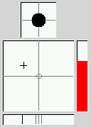
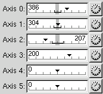
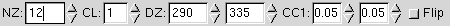
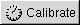
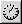
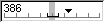

jscalibrator features two methoids for calibrating
joysticks; representative or logical
axis layout.
The representative axis layout (depicted below) shows a diagram of what a typical joystick looks like with cross hairs and ticks indicating the current axis positions. The solid circle in the smaller top grid represents the hat, the big grid in the center represents the standard x and y axises, the vertical bar on the right represents the throttle axis, and the horizontal bar on the bottom represents the rotate or steering wheel axis.
The above methoid of calibration is usually the easiest and fastest but lacks the ability the set precise specifications.
Logical layout (depicted below) offers a more advanced level of calibration. Each axis is presented as a separate line with its current position and attributes. The horizontal window with an arrow pointing down along a ruler is called the axis gauge, the ruler ticks are in units of 25% where the center tick is 0% and the left and right most ticks are -100% and 100% (respectivly).
Each axis has the following attributes (as shown below); null zone, correction level, dead zone (min & max), correctional coefficient, etc. Reffer to the Introduction for definitions on these attributes.
To calibrate using the representative axis layout, first click on the Representative tab as needed to get to the representative axis layout page. Next click on the  toggle button to begin calibrating.
Move all axises through their full range of motion (including the hats if you have them) and return all axises to their centers.
Click on the toggle button again to process the calibrated values and end calibration (this may take a few seconds).
The null zone and other parameters will be set by the program to their most useable values. If these values are not satisfactory or you wish to set additional parameters, then you should perform a calibration using the logical axis layout (see next section).
To calibrate using the logical axis layout, first click on the Logical tab as needed to get to the logical axis layout page. Next click on the  toggle button next to the axis you want to calibrate to begin calibrating that axis.
Move just that axis through its full range of motion and then return it to its center.
Click on the toggle button again to process the calibrated values and end calibration (this may take a few seconds).
Next you can adjust the null zone, correction level, dead zone, and other parameters for that axis. If you are unsure about what a parameter does, then you should look it up in the definitions described in the Introduction.
The null zone is depicted as a grey region near the center on the axis gauge (shown below). The dead zone is shown only when correction level is set to level 1 or greater, the dead zone is depicted as a slightly thicker black bar parallel to the ruler with two vertical bars representing the min and max bounds.
Adjust the null zone to cover the range where the arrow seems to "fluctuate" when you are not touching the stick.
If the axis seems to give "erratic" values when moved in a range near the center, then set the correction level to 1 (or higher) and adjust the dead zone (both min and max) to cover this range. Once you have the dead zone range set, you need to specify the correctional coefficient for both the the min and max dead zone ranges. A typical correctional coefficient would be 0.1, decrease the correctional coefficient for a greater "dampening" affect on the dead zone.
Once you are satisfied with the calibration, you should save it to file. Simply go to Calibration->Save, the calibration will be saved to the default calibration file found in your home directory.
Calibration for other devices found in that file (if it already exists) will be preserved.
You can select another joystick device to calibrate from the
joystick device prompt, click on the popdown button and select
one from the list then press ENTER.
| libjsw is Copyright © 1997-2005 WolfPack Entertainment |